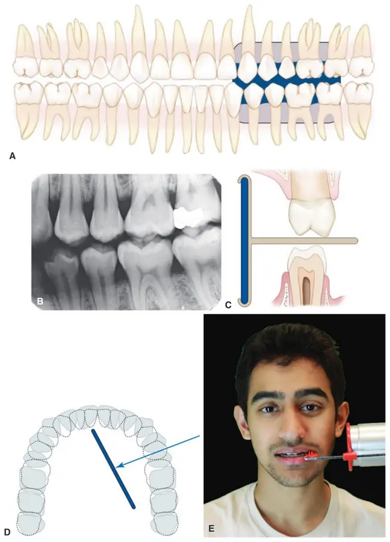
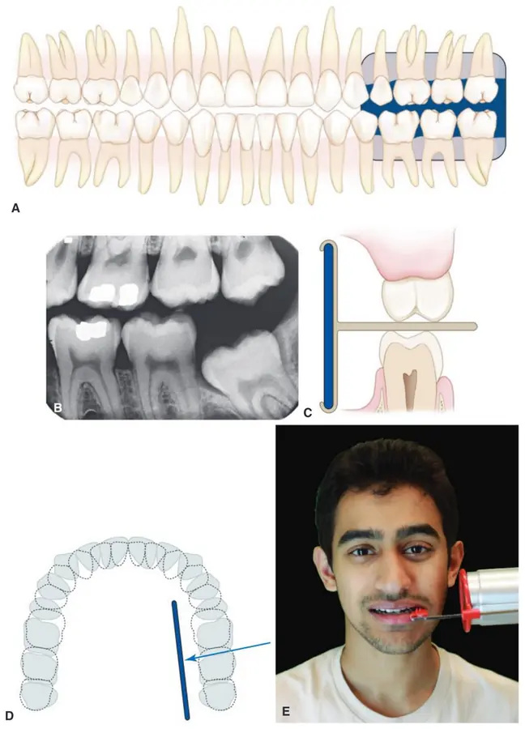

نسخه استخراجشده؛ ترجمه یا تأیید علمی انجام نشده است. وضعیت: captured
بایتوینگ — که اینترپروگزیمال هم نامیده میشود — یک ویژگی یکتا دارد: «تاجهای دندانهای ماگزیلا و مندیبل و کرست آلوئولار را روی یک گیرنده» در بر میگیرد. هیچ کلیشهی داخلدهانی دیگری این کار را نمیکند.

و هندسهاش سه شرط دارد:
و سه هدف تشخیصیاش — هر سه به یک ناحیهی خاص گره خوردهاند:
و دو راه نگه داشتن گیرنده، با یک تفاوت مهم:
و همین تفاوت، اهمیت وضعیت سر بیمار را تعیین میکند: «وقتی نگهدارنده با رینگ راهنمای بیرونی استفاده میشود، وضعیت سر بیمار اهمیت کمتری دارد. ولی وقتی از تب استفاده میشود، راهنمای بیرونی برای موقعیتدهی مخروط در دسترس نیست؛ پس استانداردسازی وضعیت سر بیمار مهم است.»
و وضعیت پایه: بیمار «صاف نشسته روی صندلی با صفحهی ساژیتال عمودی و صفحهی اکلوزال افقی».
روال جایگذاری افقی، گامبهگام: «گیرنده در وستیبول لینگوال مجاور دندانهای مورد نظر قرار میگیرد، و بایتبلاک یا تب روی سطح اکلوزال مندیبل تکیه میکند. گیرنده تنظیم میشود تا موازی سطوح باکال دندانها باشد.» و «لبهی نگهدارنده یا تب میتواند به این جهتگیری موازی کمک کند».

و سپس: «از بیمار خواسته میشود بهآرامی روی بایتبلاک ببندد.» و یک هشدار ویژهی تب: «هنگام استفاده از تبهای مقوایی، مهم است بیمار را راهنمایی کنی بهآرامی ببندد تا جدایی کافی میان دندانهای ماگزیلا و مندیبل تأمین شود.»
و قاعدهی شمار — با یک استثنای سنی: «دو نمای بایتوینگ خلفی، یک پرمولر و یک مولر، برای هر کوادرانت توصیه میشود. ولی برای کودکان ۱۲ ساله یا کوچکتر، معمولاً یک گیرندهی بایتوینگ (شمارهی ۲) کافی است.»
و دو قاعدهی ناحیه که جایگذاری را دقیق میکنند:
و یک نکتهی فنی که جایگذاری را تغییر میدهد: «هنگام استفاده از فیلم یا فسفرپلیت، ناحیهی تصویربرداری تقریباً ۲ میلیمتر از لبهی پاکت است. هنگام استفاده از سنسورهای حالت جامد، تقریباً ۲ تا ۴ میلیمتر «فضای مرده» میان لبهی محفظهی پلاستیکی و چیپ ثبت تصویر هست؛ و این با سازنده تغییر میکند.»
و یک راهحل بازار: «یک سازنده — XDR Radiology — فناوری ثبتشدهای دارد که فضای مردهی کمتری در انتهای تصویربرداری مزیال فراهم میکند، و این تصویربرداری کانتکت کانین/پرمولر را آسانتر میسازد.»
و حالا بایتوینگ عمودی — و اندیکاسیون دقیقش: «بایتوینگهای عمودی وقتی به کار میروند که بیمار تحلیل استخوان آلوئولار متوسط تا شدید دارد.» و منطقش: «جهتگیری عمودی طول گیرنده، احتمال ثبت شدن کرستهای آلوئولار باقیماندهی ماگزیلا و مندیبل روی رادیوگرافی را افزایش میدهد.»
و نکتهی مهم: «اصول موقعیتدهی گیرنده و جهتدهی پرتو در بقیهی موارد همان اصول بایتوینگ افقی است.» و «بایتبلاکهای ویژهی جهتگیری عمودی سنسور در دسترساند».